THOMAS RASOR
ABOUT ME
Although my specialty is GPU programming, I have worked on every aspect of game design.
I have experience with complex visual effects, gameplay scripting, multiplayer networking, sound design, 3D modelling, animation, graphic design, UI / UX, and more.
I have spent over a decade working in the Unity game engine, but I have experience with a number of other engines and tools.
I have worked on VR applications as well as building and training neural networks.
Over the last few months I have been learning Godot and GDScript. So far, Godot has proven to be an excellent goto for small personal projects and prototyping.
I also made this website.
You can email me at thomas.ir.rasor@gmail.com
I am always open to contract work.
I have spent over a decade working in the Unity game engine, but I have experience with a number of other engines and tools.
I have worked on VR applications as well as building and training neural networks.
Over the last few months I have been learning Godot and GDScript. So far, Godot has proven to be an excellent goto for small personal projects and prototyping.
I also made this website.
You can email me at thomas.ir.rasor@gmail.com
I am always open to contract work.
SCI-FI SIGNS
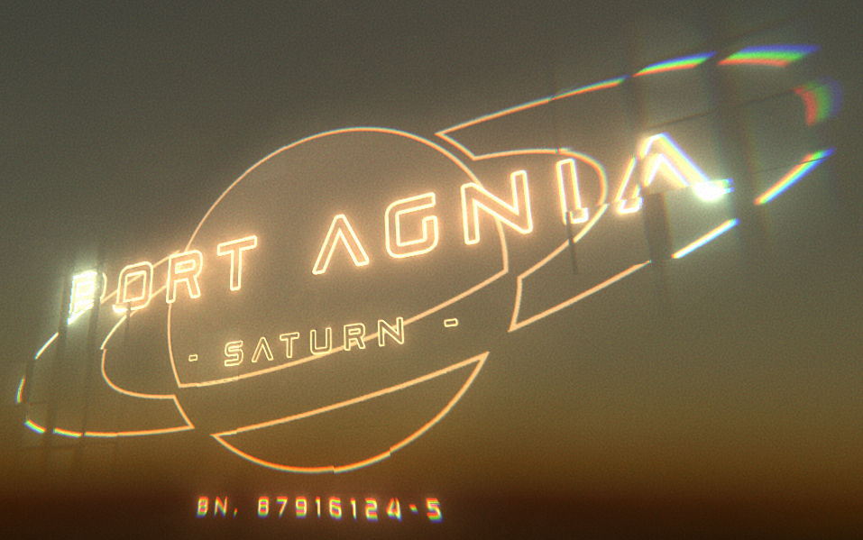
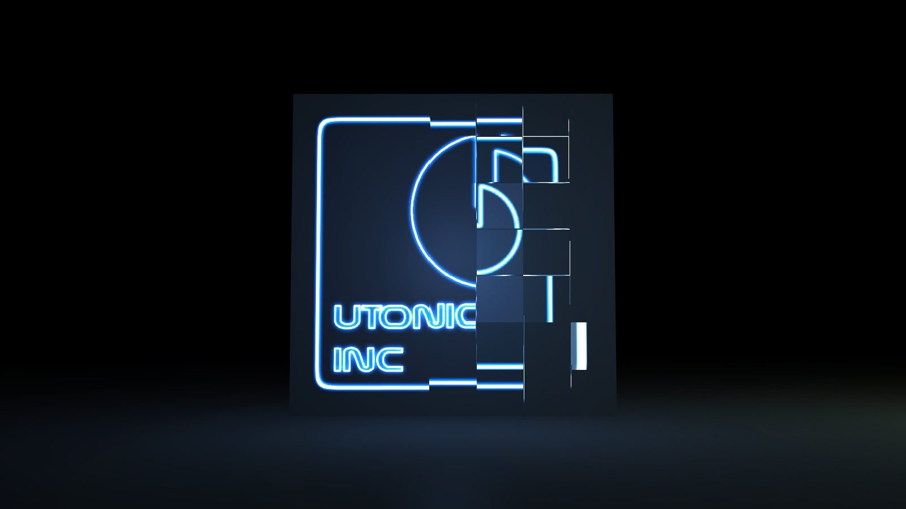


An artist customisable and parameter heavy sci-fi visual effect package that makes adding animated holograms to any project incredibly easy.
Visit the Asset Store for more examples and information.
Visit the Asset Store for more examples and information.
CROSS-SECTION
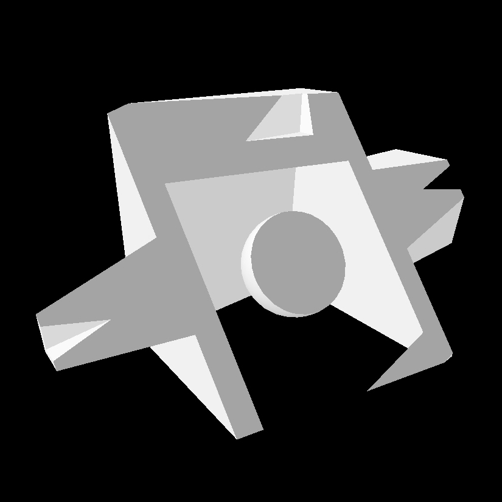
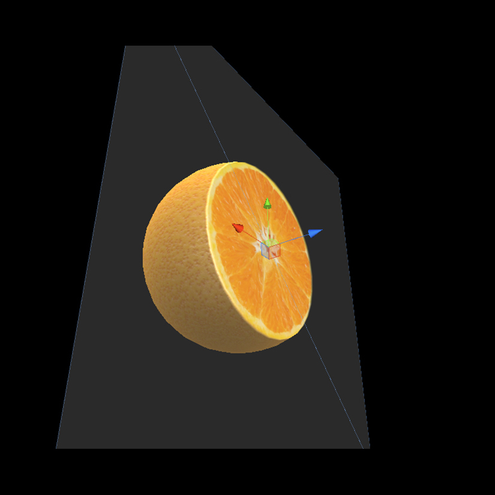
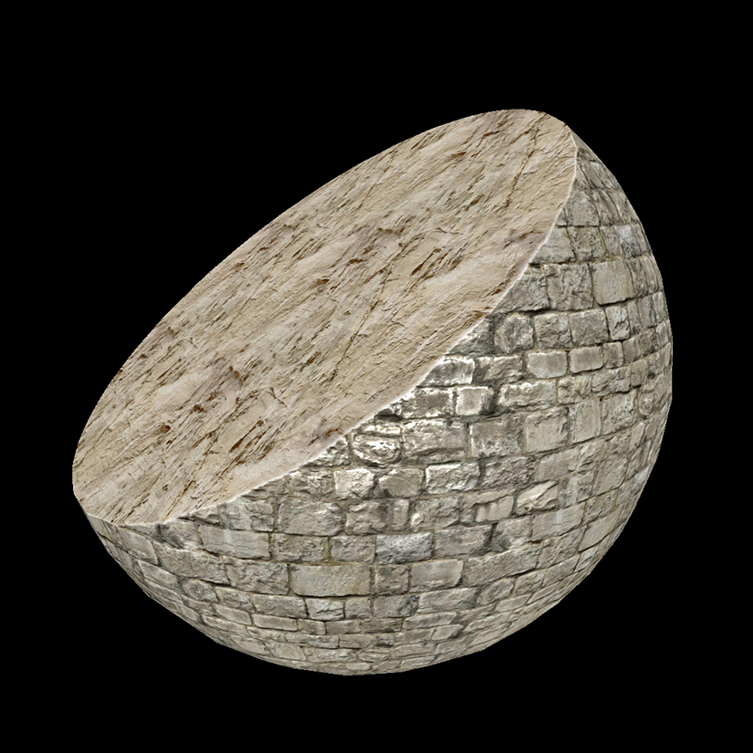
One of my earliest tech art contract works, a shader to show a cross section of any mesh.
X-RAY
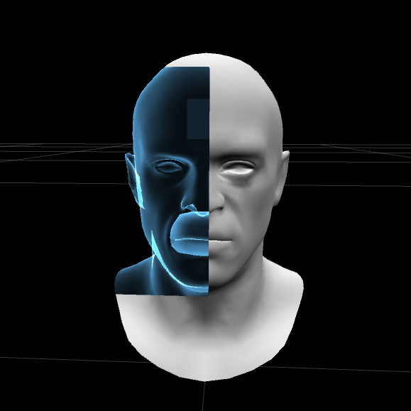
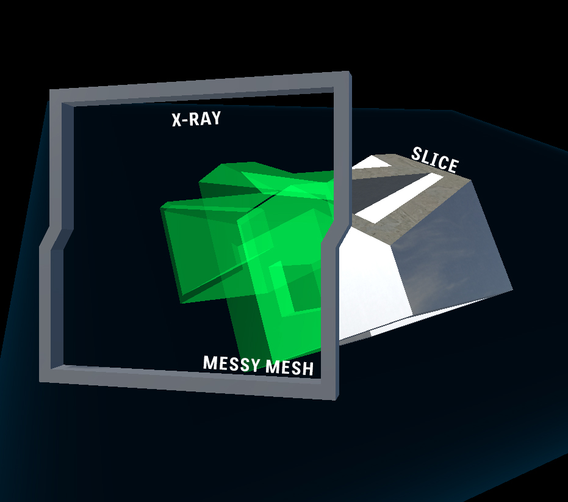

Another early work, a shader to visualize the interior of any mesh.
FRYABLE DONUTS
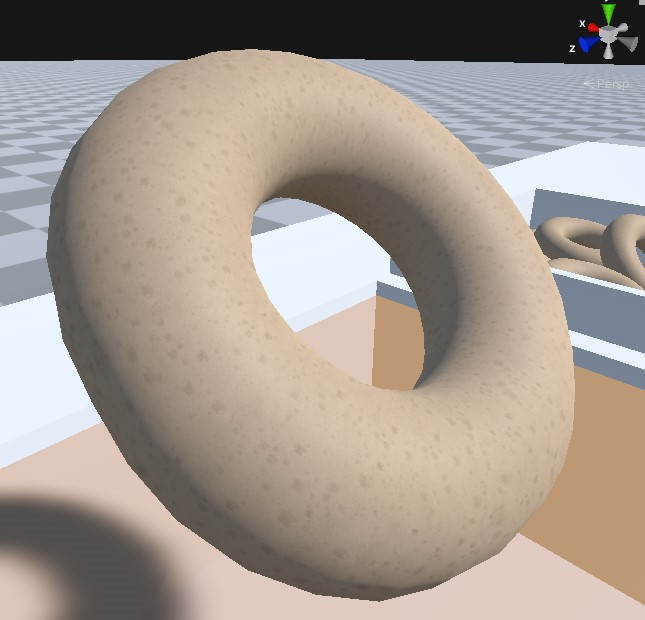
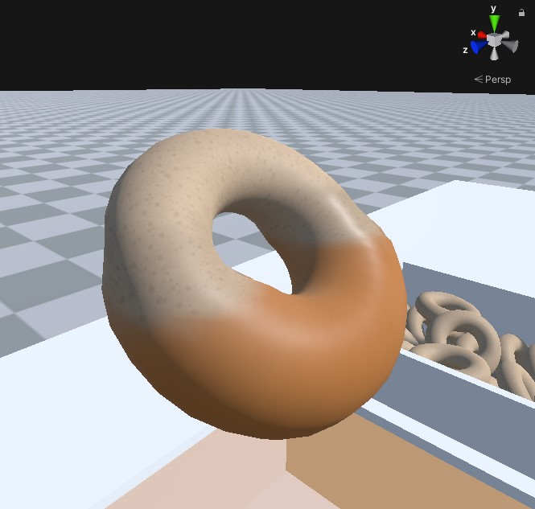
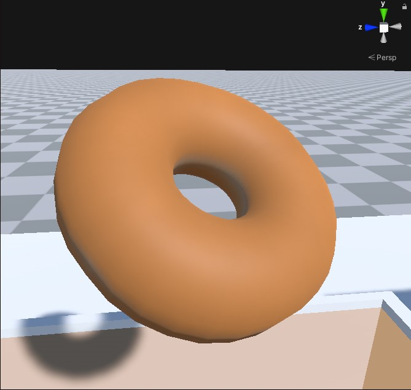
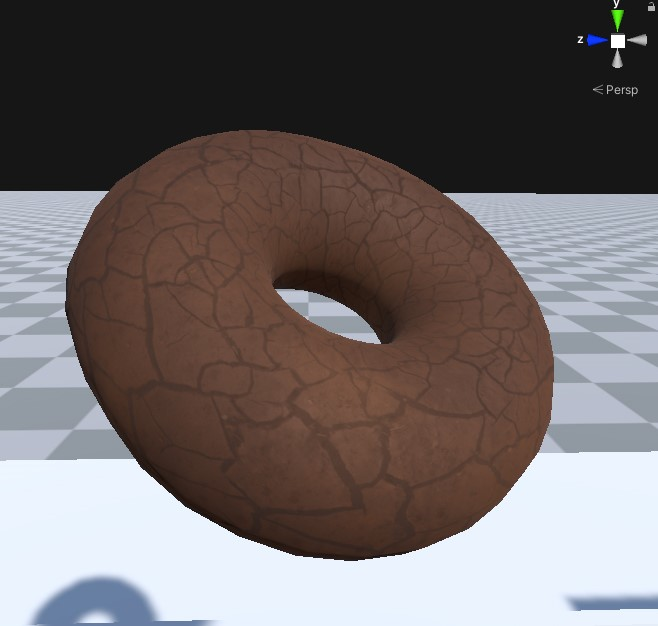
A procedural donut shader for a VR demo.
Submersing a donut in cooking oil would 'cook' that part of the donut.
A donut left in the oil too long would naturally be burnt.
Submersing a donut in cooking oil would 'cook' that part of the donut.
A donut left in the oil too long would naturally be burnt.
FLUID-LIKES
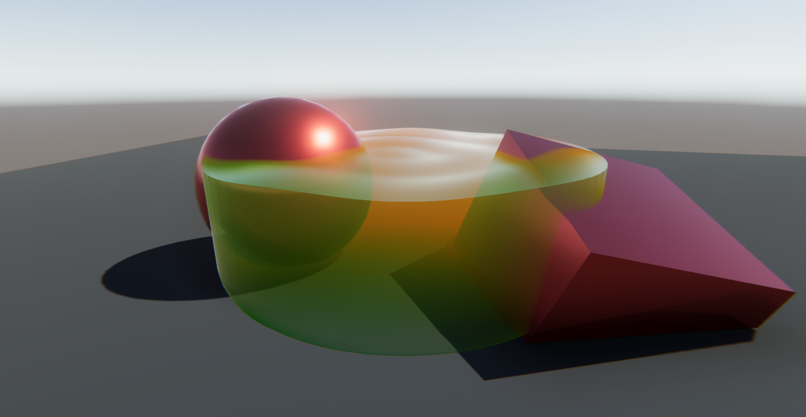
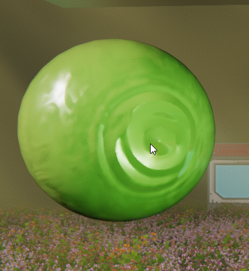
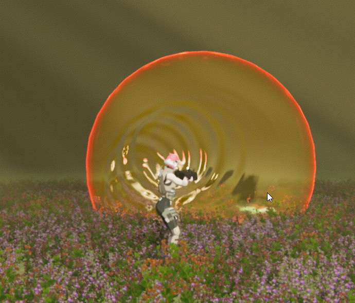
First, a fluid volume featuring depth fog, screen-space refraction, and animated surface waves.
Next two, fluid surfaces that respond to ripples in 3D space.
Next two, fluid surfaces that respond to ripples in 3D space.
PULSATING TENTACLE
A pulsing tentacle that uses parallax to create the illusion of a dense fluid beneath its surface.
PROJECT REVENANTS ( WORKING TITLE )
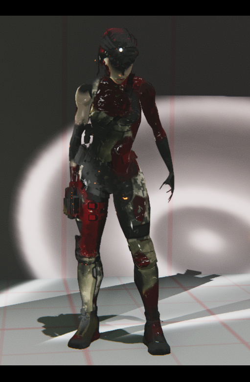
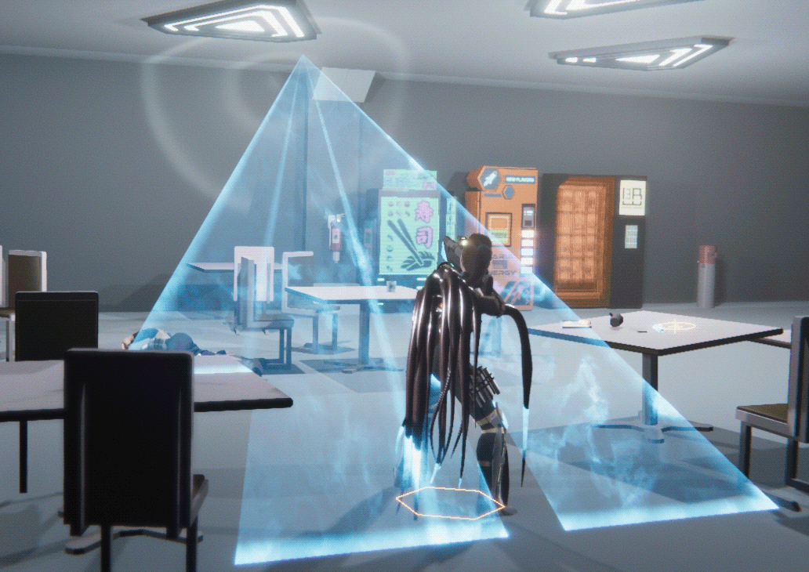
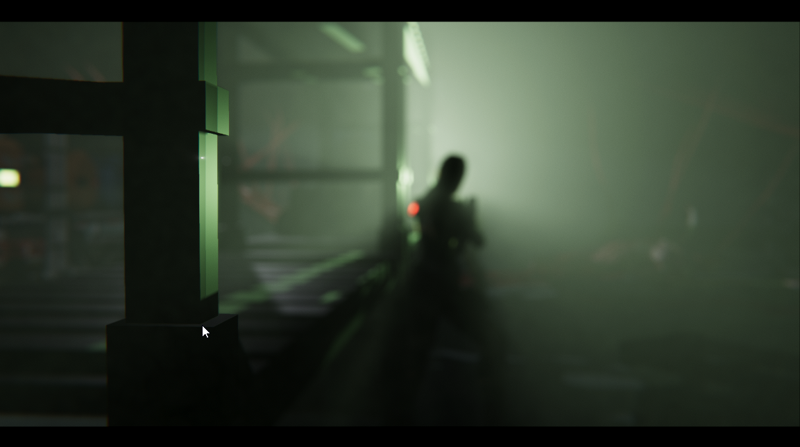
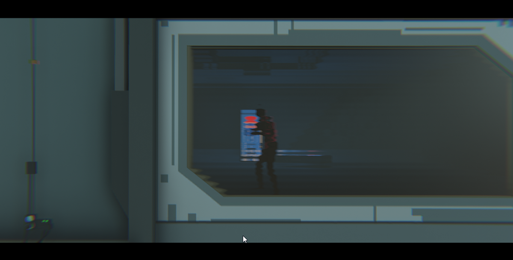
Some additional graphics and design work for a hobby project.
Development on this project is currently on hold, but you can see more WIP content on the Instagram page.
Development on this project is currently on hold, but you can see more WIP content on the Instagram page.
More
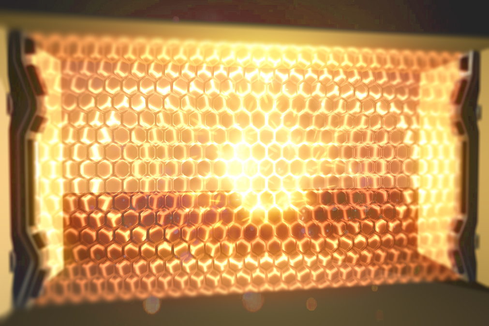

Post-processing. Recursive mirrors. Holograms. Forcefields.
Dynamic procedural skyboxes. Selective pixelization and voxelization. Loading animations. Procedural galaxies. Animated user interfaces.
I have written countless shaders filling a wide variety of design and visual effects needs.
These are only a small handful of the visual effects I have produced, but should represent the level of quality that my work carries.
These are only a small handful of the visual effects I have produced, but should represent the level of quality that my work carries.